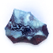

Хвартитовая руда
Предметы / С заданий
Открыть в интерактивной вики →
| Вес | 1 |
|---|
Описание
Очень ценная руда, добываемая исключительно в пустоши Хвара. Однажды из нее можно будет создать металл легче воздуха - по крайней мере, так утверждают мечтатели.
Требуется для выполнения ежедневного задания") у
у  Ирсан на Заставе в Северном Алариле.
Ирсан на Заставе в Северном Алариле.
Требуется для выполнения ежедневного задания
у Ирсан на Заставе в Северном Алариле.